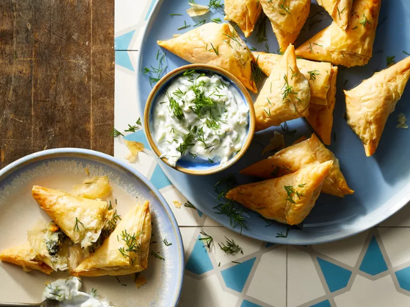

Air Fryer Spanakopita
The classic Greek appetizer spanakopita can easily be made in the air
fryer.

Ingredients
-
2 (10-ounces) pkg. frozen chopped spinach, thawed and squeezed dry
- 1/2 cup crumbled feta cheese
- 1/2 cup shredded mozzarella cheese
- 1/2 cup freshly grated Parmesan cheese
- 1 clove garlic, minced
- 1 (1-lb. pkg.) frozen phyllo dough, thawed
- 1/2 cup unsalted butter, melted
- tzatziki sauce for serving
- chopped fresh dill for serving
Directions
-
For filling, stir together spinach, feta, mozzarella, Parmesan, and
garlic in a bowl. Line a baking sheet with parchment paper.
-
Arrange 1 sheet of phyllo on a clean work surface and brush lightly with
some of the melted butter. Top with 2 more phyllo sheets and more
butter. Cover remaining phyllo with a damp towel while you work. Cut
phyllo stack lengthwise into 3 (3-inch-wide) strips.
-
Spoon about 1 tablespoon filling at the bottom of each strip. Take the
bottom right corner and fold the dough over the filling to make a
triangle. Fold the bottom left corner up to make another triangle.
Continue folding until all the dough is folded. Arrange spanakopita,
seam side down, on the prepared baking sheet. Lightly brush with butter.
Repeat with remaining phyllo, filling, and butter.
- Preheat air fryer to 375 degrees F (190 degrees C)
-
Arrange spanakopita in an even layer in the air fryer basket, working in
batches as needed.
-
Cook, turning once halfway through, until spanakopita is golden brown,
12 to 15 minutes. Cool slightly. Serve with tzatziki sauce and dill.
Return to top
Return to back